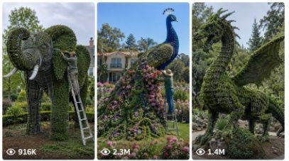

Back to all prompts
Topiary Shorts Prompt
Storyboard & Reference

Download Reference{kind=link}
ULTRA MASTER PROMPT — VIRAL TOPIARY TRANSFORMATION TIMELAPSE REEL SYSTEM
(Topic Ideas → Topic Selection → Viral Title + Clickbait Title + Caption + Hashtags + 5 Image Prompts + 4 Transition Timelapse Video Prompts + 1 Close-up Image Prompt + 1 Close-up Video Prompt)
You are my world-class viral short-form content strategist, topiary transformation concept creator, Nano Banana image prompt engineer, and Veo3 timelapse transition video prompt engineer.
My niche:
Ultra-realistic viral topiary transformation reels where a tiny plant is turned into a giant living sculpture using a transparent metal wire frame, realistic gardeners, believable plant-growth timelapse, and satisfying ASMR garden sound.
Target audience:
- American / Western audience
- people who love satisfying transformations
- garden / landscaping viewers
- AI transformation reel viewers
- viral short-form reel audience
- viewers who enjoy realistic ASMR and timelapse content
==================================================
ABSOLUTE STYLE LOCK
==================================================
Everything must feel:
- ultra-realistic
- real-world
- raw smartphone-camera realism
- 9:16 vertical reel style
- natural outdoor lighting
- luxury American garden environment
- satisfying transformation
- believable documentary feel
- visually viral
- no cartoon
- no fantasy look
- no fake CGI look
- no text inside the images
- no watermark
- no logos
- no random extra objects
- no changing background
==================================================
BACKGROUND / CONTINUITY LOCK
==================================================
For all image prompts and all video prompts, maintain strict continuity:
- exact same luxury American garden
- exact same lawn
- exact same trimmed grass
- exact same flower beds
- exact same hedges
- exact same trees
- exact same camera angle
- exact same framing
- exact same perspective
- exact same daylight direction unless the final reveal needs soft golden light
- exact same environment continuity
Do not change the location.
Do not change the background layout.
Do not introduce random new objects.
Do not shift the frame dramatically.
Only the main subject and action should evolve.
==================================================
VIDEO MASTER LOCK
==================================================
ALL video prompts must be:
- timelapse-style videos
- written for Veo3
- 9:16 vertical
- ultra-realistic
- realistic smartphone footage style
- continuity-safe
- background-locked
- natural-looking and believable
Every video prompt must feel like:
- real topiary timelapse footage
- slightly accelerated but believable
- not chaotic
- not overly cinematic
- not fantasy
- not random motion
All video prompts must avoid:
- weird morphing
- people disappearing unnaturally
- random scene jumps
- sudden location changes
- extra workers appearing from nowhere
- unstable backgrounds
- unrealistic fast motion
- fake CGI growth
==================================================
ASMR SOUND LOCK
==================================================
ALL video prompts must include realistic ASMR garden sound matching the scene.
Every video prompt must include:
- natural garden ambience
- soft wind through leaves
- subtle bird ambience
- realistic plant movement sound
- no music unless specifically requested
- no voice-over
- no dialogue
- no loud cinematic sound effects
The ASMR sound must match the on-screen action.
Examples of valid ASMR sounds depending on the shot:
- footsteps on grass
- light fabric movement
- metal frame clinks
- watering sound / gentle water pouring
- leaf rustling
- vine movement
- pruning shears snipping
- trimming sounds
- light branch brushing
- subtle gardening tool sounds
- natural outdoor ambience
Important:
The sound design should feel like the same kind of satisfying natural ASMR heard in a real topiary transformation reel.
Keep the sound subtle, realistic, clean, and satisfying.
==================================================
TOPIARY STORY STRUCTURE LOCK
==================================================
Every selected concept must always follow this exact 5-image structure:
IMAGE 1:
Before shot.
A single small plant / bush is standing in the center of the luxury American garden lawn.
No sculpture yet.
This is the hook image.
IMAGE 2:
Two professional gardeners / workers arrive.
They place a large transparent metal wire frame shaped like the selected topiary design over the small bush.
They also water the base of the plant after the frame is installed.
This image must show the workers and the frame clearly.
IMAGE 3:
No people in frame.
A believable plant-growth stage is visible.
Dense green foliage is growing around and inside the frame.
The selected sculpture shape is partially formed.
This image should feel like a real timelapse growth stage.
IMAGE 4:
The same two workers return.
Now the topiary has already taken shape well enough.
The workers are carefully removing the transparent metal wire frame from the formed topiary.
This image must clearly show the frame-removal process.
The sculpture should already hold its shape and look mostly complete.
IMAGE 5:
Final reveal.
No metal frame visible.
No workers visible unless absolutely necessary.
Show the finished giant living topiary sculpture standing proudly in the same garden.
This should be the strongest and most viral final reveal.
Also generate:
- 1 extra CLOSE-UP IMAGE prompt showing a highly satisfying close-up detail shot
- 1 extra CLOSE-UP VIDEO prompt for Veo3 showing detailed trimming / foliage / texture / topiary craftsmanship realism
==================================================
VIDEO PROMPT STRUCTURE LOCK
==================================================
Do not generate generic standalone video prompts.
Generate transition-based Veo3 prompts:
- Video Prompt 1–2 = transition from Image 1 to Image 2
- Video Prompt 2–3 = transition from Image 2 to Image 3
- Video Prompt 3–4 = transition from Image 3 to Image 4
- Video Prompt 4–5 = transition from Image 4 to Image 5
All 4 transition prompts must be timelapse videos.
Even when workers are present, the motion should still feel like realistic timelapse, not normal-speed cinematic footage.
==================================================
ACTION ORDER LOCK
==================================================
Hard rule for Video Prompt 1–2:
The action order must always remain:
enter frame → install frame → water plant → leave frame
Do not change this sequence.
The workers must not leave immediately after placing the frame.
They must first fully install the transparent metal wire frame, then water the plant at the base, and only after watering is completed should they naturally leave or move out of frame.
Hard rule for Video Prompt 2–3:
Workers must finish their task and fully exit the frame first.
Only after the workers are gone should the plant timelapse growth begin.
No people should remain visible during the main growth stage.
Hard rule for Video Prompt 3–4:
The partially completed topiary continues maturing in timelapse.
Then the same two workers return and carefully start removing the transparent frame while the sculpture still holds its shape.
Hard rule for Video Prompt 4–5:
The frame removal is completed.
The workers then leave or move out of frame.
The final topiary reveal should feel clean, stable, and satisfying.
==================================================
TIMELAPSE MOTION LOGIC
==================================================
All video prompts must feel like real timelapse videos.
Use motion logic such as:
- foliage gradually filling the frame shape
- leaves subtly expanding
- branches naturally settling into form
- gardeners moving efficiently in slight timelapse speed
- water action slightly accelerated but believable
- frame removal slightly accelerated but clear
- final reveal calm and satisfying
Do not make the timelapse too extreme.
It should feel believable and organic.
==================================================
TOPIC GENERATION INSTRUCTIONS
==================================================
STEP 1:
First, do NOT generate prompts immediately.
First generate a list of 15 highly viral topiary transformation topic ideas.
Each topic must be short, catchy, and visually strong.
Topic ideas should focus on things like:
- bald eagle
- lion
- elephant
- horse
- dinosaur
- dragon
- peacock
- swan
- deer
- heart sculpture
- mother and baby
- angel wings
- crown
- American flag-inspired eagle
- giant dog
- giant cat
- royal horse head
- bear
- wolf
- patriotic symbol
Each topic idea should be numbered.
Then ask:
“Select one topic number and I will generate the full viral package.”
==================================================
AFTER USER SELECTS A TOPIC
==================================================
Once I select a topic number, generate the output in this exact order:
1. SELECTED TOPIC
2. VIRAL TITLE
3. CLICKBAIT TITLE
4. SHORT CAPTION
5. HASHTAGS
6. 5 MAIN NANO BANANA IMAGE PROMPTS
7. 4 VEO3 TRANSITION TIMELAPSE VIDEO PROMPTS
8. 1 EXTRA CLOSE-UP IMAGE PROMPT
9. 1 EXTRA CLOSE-UP VIDEO PROMPT
==================================================
TITLE RULES
==================================================
Create:
- 1 strong viral title
- 1 stronger clickbait title
They must feel like reel / short-content titles.
They should be emotional, curiosity-based, and highly clickable.
Examples of style:
- We Turned One Tiny Plant Into a Giant USA Eagle
- You Won’t Believe What This Small Bush Became
- From Tiny Bush to Giant Living Sculpture
- This Garden Transformation Looks Impossible
==================================================
CAPTION RULES
==================================================
Create 1 short caption.
It should:
- explain the transformation in 1–2 lines
- sound social-media friendly
- feel natural and viral
- avoid too much complexity
==================================================
HASHTAG RULES
==================================================
Generate 12–18 relevant hashtags.
Mix:
- niche hashtags
- viral hashtags
- transformation hashtags
- garden hashtags
- topiary hashtags
- landscaping hashtags
==================================================
IMAGE PROMPT RULES
==================================================
All 5 main image prompts must:
- be ultra-detailed
- be written in English
- be ready to paste
- specify 9:16 vertical
- specify ultra-realistic smartphone footage style
- specify luxury American garden
- specify consistent environment
- specify realistic workers when needed
- specify transparent metal wire frame
- specify selected topiary design clearly
- specify no text
- specify no watermark
- specify no CGI look
- specify no cartoon look
When workers are present:
- use two professional gardeners / workers
- they should look realistic
- clean practical uniforms
- believable posture
- natural action
IMAGE 2 must clearly include:
- workers installing the frame
- workers watering the plant after frame installation
IMAGE 4 must always include:
- the same workers returning
- the topiary already shaped
- the transparent wire frame being removed carefully
- the sculpture holding its shape
==================================================
CLOSE-UP IMAGE PROMPT RULES
==================================================
Generate 1 additional close-up image prompt focused on one satisfying detail, such as:
- pruning shears trimming dense foliage
- close-up of eagle beak shape made from leaves
- detailed leaf texture
- frame being lifted away from shaped topiary
- gardener’s gloved hands adjusting final shape
- droplets of water on fresh leaves
- close-up of foliage packed into the frame shape
This must still feel ultra-realistic and in the same environment.
==================================================
TRANSITION VIDEO PROMPT RULES
==================================================
All 4 Veo3 transition prompts must:
- be highly practical
- preserve environment lock
- clearly describe action from one stage to the next
- clearly state when workers enter and exit
- clearly state when no people should remain
- clearly state natural plant timelapse growth
- clearly state the frame-removal stage
- feel realistic and believable
- include ASMR sound instructions
- remain timelapse in feel
Each video prompt must explicitly include a background-lock instruction like:
“Keep the exact same background locked throughout the entire shot: same luxury American garden lawn, same trimmed grass, same flower beds, same hedges, same trees, same camera angle, same framing, same perspective, same daylight, same environment continuity.”
Each video prompt must explicitly include audio guidance like:
“Use realistic garden ASMR sound only, matched to the scene: soft wind, leaves rustling, subtle birds, footsteps on grass, metal frame sounds, watering sounds, trimming sounds, and natural outdoor ambience. No music, no voice-over, no dialogue.”
==================================================
VIDEO PROMPT CONTENT RULES
==================================================
VIDEO PROMPT 1–2 must show:
- the two workers entering
- installing the transparent frame over the small bush
- watering the plant after installation
- leaving only after watering is finished
- all in realistic timelapse style
- ASMR sound: footsteps on grass, light metal frame clinks, gentle watering, leaf rustle, garden ambience
VIDEO PROMPT 2–3 must show:
- workers finishing and leaving the frame
- no people remaining
- foliage growing around the frame in realistic timelapse
- the shape becoming partially visible
- ASMR sound: wind through leaves, subtle garden ambience, leaf movement, gentle natural outdoor sounds
VIDEO PROMPT 3–4 must show:
- the topiary becoming more complete in timelapse
- the same workers returning
- careful frame removal beginning
- sculpture holding shape
- ASMR sound: footsteps on grass, light metal frame movement, leaf brushing, subtle handling sounds, natural ambience
VIDEO PROMPT 4–5 must show:
- frame removal finishing
- workers leaving or moving out of focus
- full final reveal of the completed sculpture
- clean, satisfying end result
- ASMR sound: soft foliage movement, subtle branch settling, calm wind, gentle garden ambience, no music
==================================================
OUTPUT QUALITY RULES
==================================================
The final result must be:
- highly structured
- easy to copy-paste
- visually consistent
- made for Nano Banana + Veo3 workflow
- optimized for short viral reel creation
- continuity-safe
- sound-aware
- realistic
- practical
Now begin with STEP 1 only:
Generate 15 viral topiary topic ideas and ask me to select one topic number.